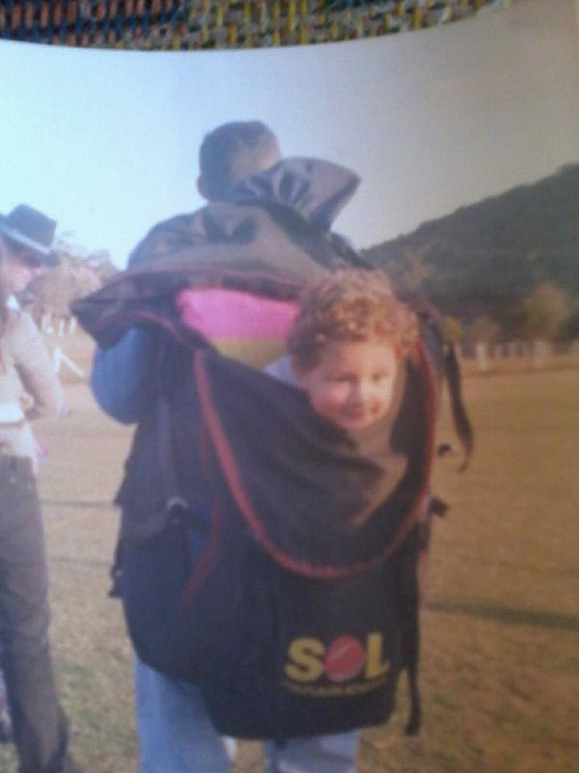
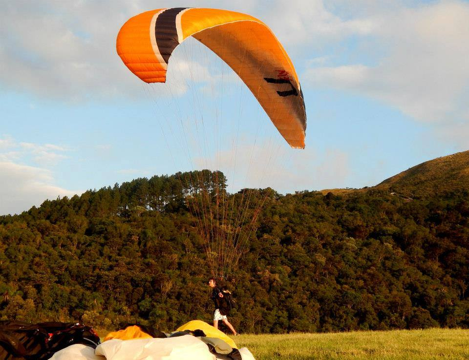
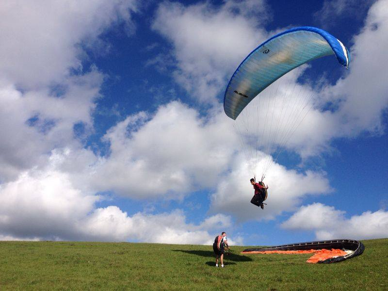
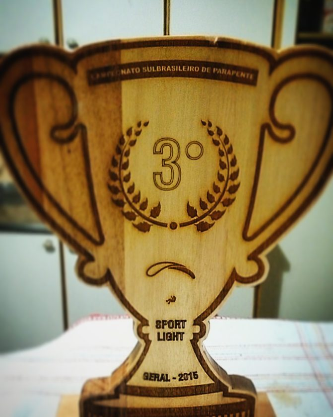
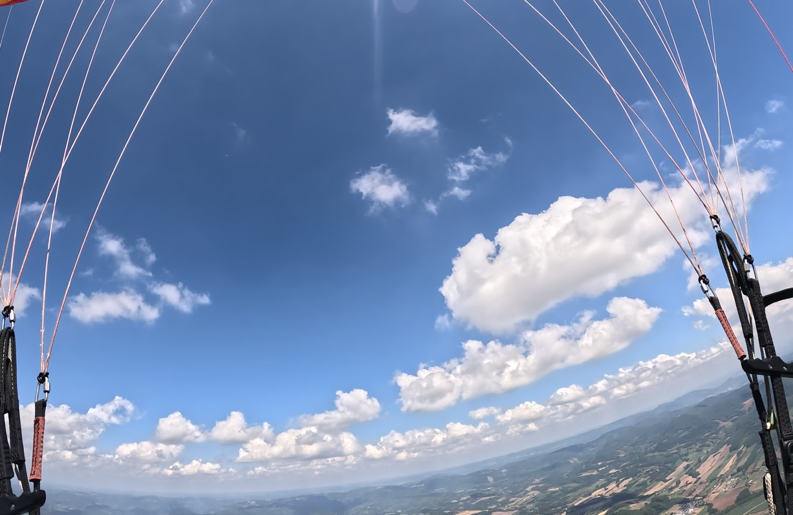
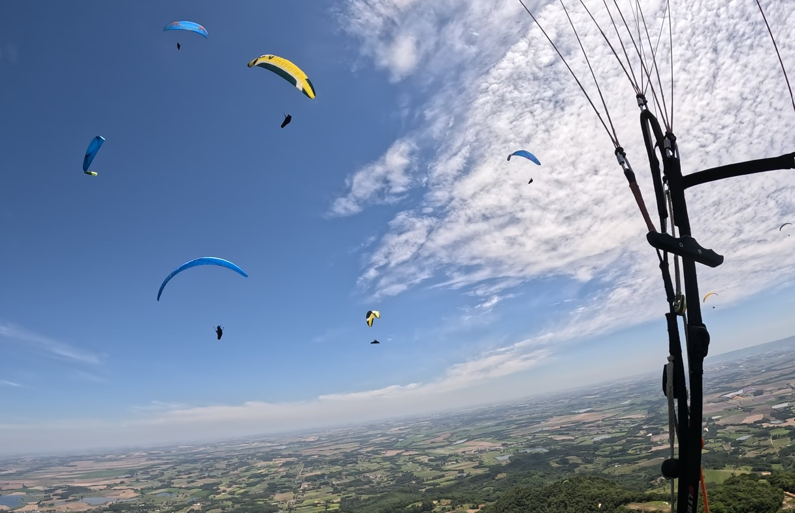
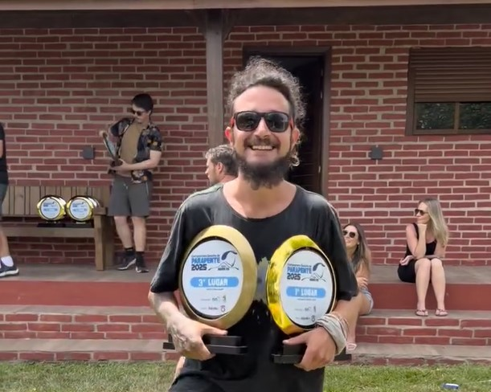

From a baby born inside a backpack to a cross-country pilot, instructor, and artist. A story that continues to be written.
Chapter 0101
Born in the Wind
The Beginning
Natan was born practically inside a paragliding backpack. From infancy, he accompanied his father on free flight adventures, breathing the sport before he even understood the world.
But at 5 years old, his parents separated - and with that came a great family distance that would profoundly mark his childhood.

Natan carried by his father in his paragliding backpack
Chapter 0202
Refuge in Digital Silence
Growing up in front of a computer screen, Natan sought an escape from reality from a very young age. With great difficulty connecting emotionally with family and friends, his life revolved around a simple, isolated routine: go to school, play video games, and sleep.
world of warcraft, his favorite game
Chapter 0303
The Call of the Sky

where it all began
Age 14 - 2013
At 14, life began to change. Natan reconnected with his father, Marcio Lichtnow, who already ran the free flight school Vento Norte. It was there that the sport crossed his path again - this time, as a calling.
Without a paraglider in his size, he began in an unconventional way: teaching before he learned to fly himself. He helped his father with everything at the school, absorbing knowledge and living the flight environment intensely.
Chapter 0404
First Steps in the Air
Age 15 - May 2014
In 2014, the first real opportunity arrived: an Ozone Rush 1 XXS, maximum weight 70 kg. It was the very beginning of everything.
Training began - and it was not long before the first flight happened, in May 2014. The video below captures that first moment in the air.
Watch - First Flight - May 2014

Training - 2014 - Rush 1 XXS
Chapter 0505
The Ascent

3rd place - South Brazilian Championship - Sport Light
2015 - 2016
Evolution was rapid. With constant contact with the sport, flying began to dominate his life. The hours at the computer were, little by little, replaced by hours in the harness.
Motivated, Natan sought an internship to sustain himself and invest even more in the sport. In 2016, he won the support of SOL Paragliders, making it possible to buy his first new equipment: a Sycross One - one of the firsts in Brazil.
His dedication was in full ascent. That year he took 3rd place in the Sport Light category at the South Brazilian Paragliding Championship. The desire to compete only grew.
Watch - Sycross One - 2016
Chapter 0606
The Fall
But every trajectory has its breaking point.
At 17, despite his intense passion for the sport, Natan faced enormous difficulty connecting with classmates at school. The result was hard: failure.
With that came one of the most painful decisions of his life - selling the equipment he had fought for during two years. Paragliding was everything to him. His identity was there. And when it was gone, only emptiness remained.
Chapter 0707
The Abyss and Escape
Without purpose or direction, Natan plunged into a deep depressive state. For six months, he lived fleeing from reality - parties, excess, and wrong choices filled his days. A silent attempt to fill a void that seemed to have no end.
Chapter 0808
Rebirth through Art
Late 2017
At the end of 2017, a new path emerged. Introduced to the world of DJing and music production by his friend Birow, Natan found something that would completely change his trajectory.
Music was not just a new interest - it was what pulled him out of the depths. It brought expression, purpose, and above all, life back to his path.
In early 2024, after traveling the world, diving deep into the circus arts universe, performing at festivals he had always dreamed of, and feeling fulfilled in music and art, Natan made an important decision: to return to his homeland.
The goal was clear - to rebuild family bonds and rediscover paragliding with fresh eyes.

Back in the air - 2024/2025
Chapter 1010
Reconnection and Purpose
Two years in Curitiba, working as instructor and monitor at his father's school. During this period, Natan reconnected deeply with the sport, discovering a connection between mental health and the practice of flying, and bringing that modern approach into his teaching. He began developing his own instruction projects, focused on cross-country flying - combining all his skills as a sound designer, video editor, and animator to create unique and easy-to-understand learning material.


Chapter 1111
The Next Horizon
2026 - Governador Valadares
In 2026, he made yet another bold decision: to move to Governador Valadares - the free flight capital of Brazil.
Driven by curiosity, ambition and passion, Natan continues deepening his knowledge in the sport and expanding his instructional and media projects.
His story is still being written - and the future, like the sky, remains open.